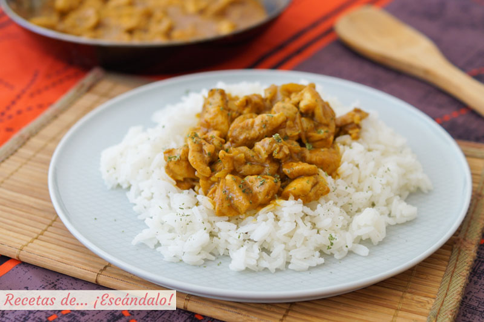
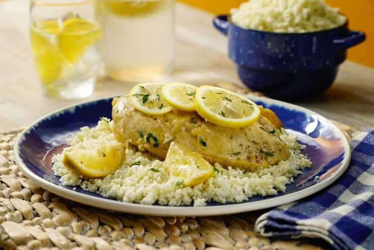
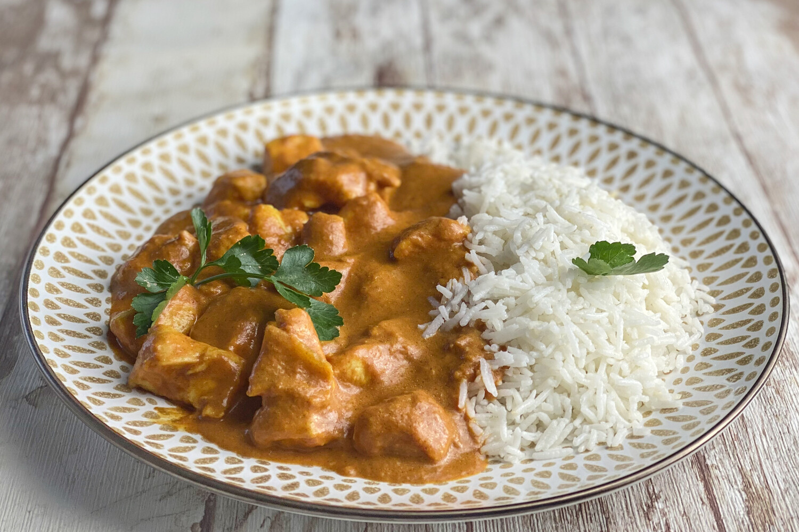
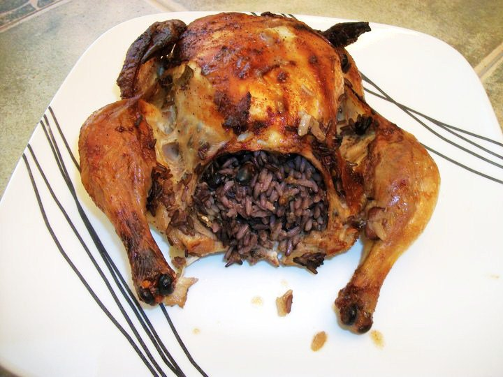

Llistat de Receptes

Arròs amb pollastre peruà
1 hora
Difitultat: Difícil
Aquest és un dels plats favorits a les taules peruanes, ja sigui amb ànec –tradicional al nord del Perú- o amb pollastre. És deliciós i té moltes variacions. L'arròs pot fer-se granat o com un risotto i, encara que és verd i té força coriandre el seu sabor és força subtil. Poden afegir altres vegetals, si volen.
Sopa de pollastre amb arròs
50 min
Difitultat: Difícil
La sopa de pollastre amb arròs és tot un clàssic, un plat complet i perfecte per a aquelles ocasions en què necessitem augmentar la nostra força o lluitar contra el fred de l'hivern, calenta i reconfortant

Arròs amb pollastre al curry
30 min
Difitultat: Fàcil
Dins la gamma dels arrossos, l'arròs amb pollastre és un plat clàssic. En aquesta oportunitat, presentem la variant amb curri, una barreja d´espècies asiàtiques amb un sabor exòtic i únic. L'arròs amb pollastre al curri és un plat fàcil i ràpid per gaudir-ne en qualsevol moment.

Arròs amb pollastre a la llimona
45 min
Difitultat: Fàcil
Si busques un plat complet, sa i de sabors mediterranis, no deixis de tastar aquest pollastre a la llimona amb arròs basmati. La combinació de salses i espècies que acompanyen el pollastre es veuen compensades per un arròs de gust suau en una recepta el gust de la qual et sorprendrà.

Tikka Masala amb arròs
50 min
Difitultat: Mitjana
Vull ensenyar-vos a preparar un deliciós pollastre tikka masala, la recepta de pollastre al curri més popular al món, juntament amb el pollastre tandoori. Amb un marinat previ amb iogurt i espècies i una cocció posterior en llet de coco i una pasta aromàtica, el sabor i la textura d'aquest pollastre són una autèntica delícia.

Pollastre farcit d'arròs
1 hora 30 min
Difitultat: Difícil
Riquíssima recepta de pollastre farcit d'arròs, que sorprendrà especialment pel bon sabor que agafarà l'arròs gràcies als sucs que deixa anar la carn. Riquíssima recepta de pollastre farcit d'arròs, que sorprendrà especialment pel bon sabor que agafarà l'arròs gràcies als sucs que deixa anar la carn.